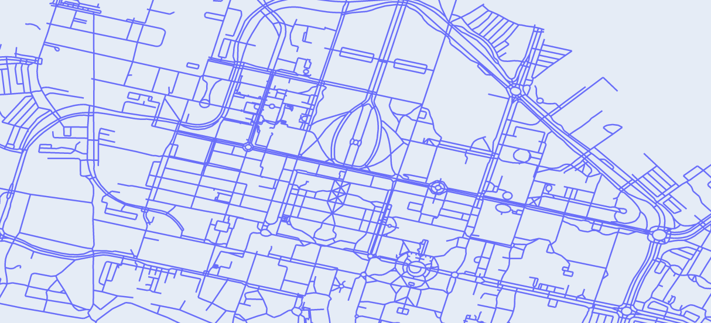

In route planning, the objective is to find the best way to get from point A to point B (think Google Maps). In this homework, we will build on top of the classic shortest path problem to allow for more powerful queries. For example, not only will you be able to explicitly ask for the shortest path from the Gates Building to Coupa Cafe at Green Library, but you can ask for the shortest path from Gates back to your dorm, stopping by the package center, gym, and the dining hall (in any order!) along the way.
We will assume that we have a map of a city (e.g., Stanford) consisting of a set of locations. Each location has:
There are a set of connections between pairs of locations; each connection has a distance (in meters), and can be traversed in both directions (if the distance from A to B is 100 meters, then the distance from B to A is also 100 meters).
There are two city maps that you'll be working with: a grid map (createGridMap) and a map of
Stanford (createStanfordMap), which is derived from
Open Street Maps.
We've created a LaTeX template here for you to use that contains the prompts for each question.
README.md.
Consider an infinite city consisting of locations $(x,y)$ where $x, y$ are integers. From each location $(x,y)$, one can go east, west, north, or south. These movements are what we refer to as ‘actions’. Specifically, an action is a change in the (x, y) coordinates: (+1, 0) represents moving east, (-1, 0) represents moving west, (0, +1) represents moving north, and (0, -1) represents moving south.
You start at $(0,0)$ and want to go to $(m, n)$, where $m, n \geq 0$. We can define the following search problem to capture this:
We first start out with the problem of finding the shortest path from a start location
(e.g., the Gates Building) to some end location. In Google Maps, you can only specify a specific end location
(e.g., Coupa Cafe at Green Library).
In this problem, we want to give the user the flexibility of specifying multiple possible end
locations by specifying a set of "tags" (e.g., so you can say that you want to go to any place with food versus
a specific location like Tresidder).
ShortestPathProblem so that given a startLocation and endTag,
the minimum cost path corresponds to the shortest path from startLocation to any location that
has the endTag.
In particular, you need to implement startState(), isEnd(state),
actionSuccessorsAndCosts(state). For Problems 2-4, our action space is the set of all named locations,
where a named location represents a transition from the current location to that new location. Note: please read
the class definitions and methods in util.py (aside from PriorityQueue) for details, as well as the details of the CityMap class in
mapUtil.py.
Recall the separation between search problem (modeling) and search algorithm (inference).
You should focus on modeling (defining the ShortestPathProblem); the default search algorithm,
UniformCostSearch (UCS), is implemented for you in util.py
ShortestPathProblem class.python mapUtil.py > readableStanfordMap.txt to write a (long-ish) file of the possible locations on
the Stanford map along with their tags.
Each tag is a [key]=[value]. Here are some examples of keys:
landmark: Hand-defined landmarks (from data/stanford-landmarks.json)amenity: Various amenity types (e.g., "parking_entrance", "food")parking: Assorted parking options (e.g., "underground")
Choose a starting location and end tag (perhaps that's relevant to your daily life) and implement
getStanfordShortestPathProblem() to create a search problem. Then, run
python grader.py 2b-custom to generate path.json. Once generated, run
python visualization.py to visualize it (opens in browser).
Try different start locations and end tags.
Pick two settings corresponding to the following:
In particular, what negative externalities might result from this system being widely deployed? Please refer to these brief articles for inspiration: "Why Traffic Apps Make Congestion Worse," "The Perfect Selfishness of Mapping Apps" as well as the module on Externalities (video and pdf).
Discuss the impact of these externalities on users of your system and other people. Remember that these sorts of problems often arise from the mismatch between the real world and one's model of it. What are potential ways you could reduce this mismatch?
Let's introduce an even more powerful feature: unordered waypoints! In Google Maps, you can specify an ordered sequence of waypoints that a path must go through – for example, going from point A to point X to point Y to point B, where [X, Y] are "waypoints" (such as a gas station or a friend's house).
However, we want to consider the case where the waypoints are unordered: {X, Y}, so that both A → X → Y → B
and A → Y → X → B are allowed. Moreover, X, Y, and B are each specified by a tag like in Problem 2 (e.g.,
amenity=food).
This is a neat feature if you think about your day-to-day life; you might be on your way home after a long day, but need to stop by the package center, Tresidder to grab a bite of food, and the bookstore to buy some notebooks. Having the ability to get a short, quick path that hits all these stops might be really convenient (rather than searching over the various waypoint orderings yourself).
WaypointsShortestPathProblem so that given a startLocation, set of
waypointTags, and an endTag, the minimum cost path corresponds to the shortest path from
startLocation to a location with the endTag, such that all of waypointTags are
covered by some location in the path (potentially including the startLocation).
Like in Problem 2, you need to implement startState(), isEnd(state), and
actionSuccessorsAndCosts(state).
There are many ways to implement this search problem, so you should think carefully about how to design your
State. We want to optimize for a compact state space so that search is as efficient as possible.
WaypointsShortestPathProblem class. To get full credit, your implementation
must have the right asymptotic dependence on the number of locations and waypoints. Note that your code will
timeout if you do this incorrectly.
getStanfordWaypointsShortestPathProblem() to create a
search problem. Then, similar to Problem 2b, run python grader.py 3c-custom to generate path.json.
Once generated, run python visualization.py to visualize it (opens in browser).
We want you to discuss how these companies could implement better labor practices, finding a way to use the unordering waypoints feature to balance company goals with the protection of driver interests. Specifically, we want you to think about ways your new unordered waypoints feature could help drivers in their working experience.
What waypoints could you include from one drop-off location to the next pick-up location to improve the driver experience? What information about drivers would you need to determine appropriate waypoints?
Note, however, that the unordered waypoints feature is an example of a dual use technology. For more, refer to the module on dual use technologies to help answer this question (video and pdf). Thus, we also want you to answer: What are some ways that a company could use this waypoints feature to increase profits at the expense of driver health? What are any downsides in collecting the appropriate information you need to recommend the waypoints?
In this problem, we will explore how to speed up search by reducing the number of states that need to be expanded using various A* heuristics.
In particular, you should implement aStarReduction()
which takes a search problem and a heuristic as input
and returns a new search problem.
NewSearchProblem class in the
aStarReduction(problem, heuristic) function. As in prior problems, you need to implement
startState(), isEnd(state), and actionSuccessorsAndCosts(state).
StraightLineHeuristic for Problem 2, which returns the
straight line distance from a state to any location with the end tag.
Note: you might want to precompute some things so that evaluating the heuristic is fast.
StraightLineHeuristic class.
NoWaypointsHeuristic for Problem 3, which returns the minimum cost path from a state to
any location with the end tag but ignoring all the waypoints (essentially the solution to Problem 2, so you can
reuse that if you'd like). Note: you might want to precompute some things so that evaluating the heuristic is fast.
Helpful comments are provided in the code.
NoWaypointsHeuristic class.
createGridMap) where the start and end are at the opposite corners
and our action space is $\text{Actions}(s) = \{ (+1, 0), (-1, 0), (0, +1), (0, -1) \}$. For $n = 10$, we would have
startLocation = "0,0", endTag = "label=9,9".
If we remove the requirement to go through waypoints, this becomes the vanilla shortest path problem, which we
can solve with UCS. However, running A* with the NoWaypointsHeuristic is different from running UCS
because the returned path will need to include the waypoints even though the heuristic ignores them. Provide a
concrete placement of $n$ waypointTags so that running A* with the NoWaypointsHeuristic
has the same time complexity as running UCS.
waypointTags that satisfies the constraints of the question.
Submission is done on Gradescope.
Written: When submitting the written parts, make sure to select all the pages
that contain part of your answer for that problem, or else you will not get credit.
To double check after submission, you can click on each problem link on the right side, and it should show
the pages that are selected for that problem.
Programming: After you submit, the autograder will take a few minutes to run. Check back after
it runs to make sure that your submission succeeded. If your autograder crashes, you will receive a 0 on the
programming part of the assignment. Note: the only file to be submitted to Gradescope is submission.py.
More details can be found in the Submission section on the course website.